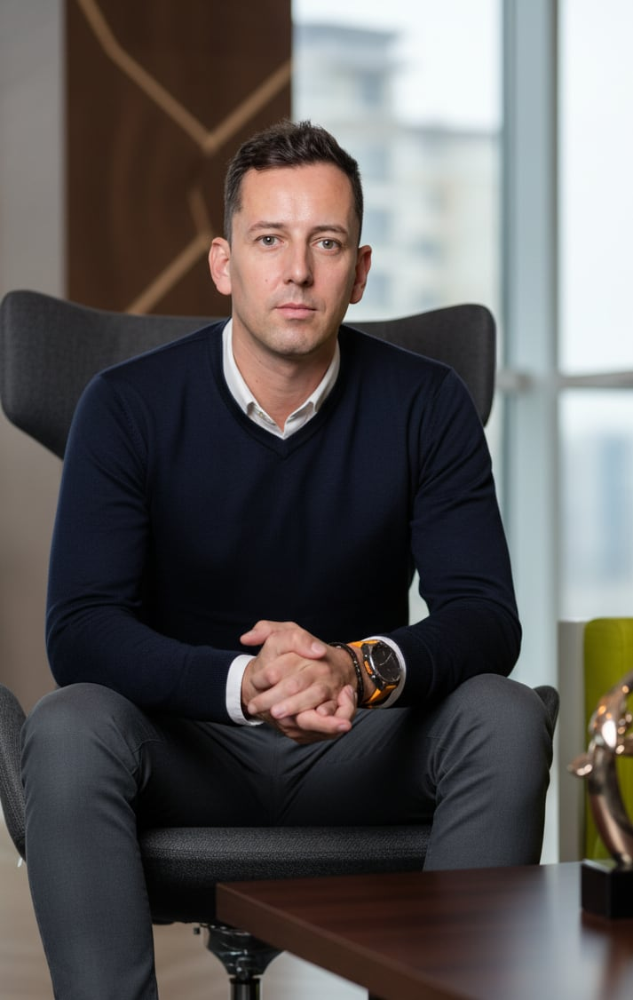

From call centre to CES: Jakub Pešl takes on marketing communications for Panasonic across Europe
He started by building the customer department for the Czech Republic and Slovakia. Today, from Prague and Wiesbaden, he coordinates Panasonic’s marketing communications for more than 20 European markets. In 19 years at the company he has led trade marketing in five countries and the Consumer section at CES.

Since April 2021 Jakub Pešl has been European Marketing Communications Manager at Panasonic Marketing Europe. He owns the pan-European master strategy for marketing communication and the assets European markets run on, including P&L, budget and ROI evaluation.
Between Japan and Europe
His work starts with global HQ in Japan and ends in each individual country. “In practice that means adapting a centrally built message so it still makes sense in each country,” he says. Add to that steering agencies, supporting the national sales organisations (LSOs), leading the team, and the CES and IFA trade shows.
From the help desk to trade marketing
He began his career in 2006 as a help desk supervisor at České Radiokomunikace. A year later he joined Panasonic, where he built the customer department for the Czech and Slovak markets from zero. From 2011 to 2019 he led trade marketing, merchandising and the Training & Promotion team for the Czech Republic, Slovakia and Hungary, adding Romania and Bulgaria in 2011–2013.
“I look for ways to come up with ideas, bring them to life and see them through to the last detail. No excuses for why it can’t be done.”Jakub Pešl on his approach
Now: DACH, Norway and AI agents
He currently runs marketing in detail for DACH, Norway and the Netherlands. In his spare time he explores AI agents and builds apps himself. More in What he’s into right now on page 2.